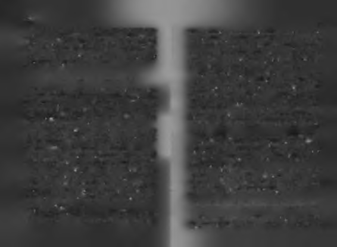

tim. Biraz da Robin Hood ruhundan esinlenen bir düşünkapsama alanıma alma konusunda sorumlu hissediyorum ceydi bu.
kendimi. Beni daha büyük düşünmeye, akıl ihracatı yapmaya
O dönemde Türkiye'nin en yüksek puanla öğrenci alan
siz okurlar mahkûm ettiniz! Şimdi ben de başarı provokatörlü
hukuk fakültesini bitirip, "kendini fikrine feda eden idealist
ğü yapıp, sizi daha büyük işler başarmaya ikna ederek "intibir genç hukukçu" tavrıyla diplomamı sırf bu idealim için kamımı" almayı planlıyorum!
yırtıp atmıştım!
Yıllar sonra bu hayalimin amiral gemisi olsun diye "Her
Kaliteli bir b a şa rı üre tm e k iste ye n le r için yeni bir başarı
Şey Seninle Başlar" adlı kitabımı yazdım. Başarıyla ilgili bilinm üfre da tı h a zırla d ım .
mesi gereken en kritik bilgileri bir kitapta yazıp, bu kitabı en çok
sayıda insana ulaştırmaya azmetmiştim. Bu kitap turuncu (po
Kendi kanatlarıyla uçmak ve sosyal hayatta başarılı olzitif) ruhlu okurların tavsiye desteğiyle 2 yılda 500.000 insana mak için bilinmesi gerekenler, sosyal başarı müfredatını
ulaştı. Yarım milyon insanın başarıya bakış açısını etkiledi.
oluşturur. Bu müfredat, başarılı olmak isteyenlerin en kıymetli hâ
Tahmin edersiniz ki, bu sonuç bana onur veren bir şeydi.
zinesidir!
Nasıl ki, Duygu Asena "kadın hakları" konusunda, Hayret
Kitabın bu kısmında, hayata yeni başlayanlar, başarıyı en
tin Karaca "toprak erozyonu" konusunda toplumun değer
başından en doğru şekilde öğrenmek isteyenler ve geldikleri
yargılarını ve bakış açısını değiştirdiyse, ben de Türk insanı
yerde başarılı kalmak için çalışanlara kısa bir başarı müfre
nın başarıya bakış açısını yeniden yapılandırmayı, "başarılı olmak
datı hazırladım.
öğrenilebilir'' inancını yaygınlaştırmayı kendime sosyal misyon
Bu müfredat, insanlık tarihinin başarı bilgi bankasından, beolarak seçmiş biriyim. Türkiye'nin metrekaresine düşen banim zihinsel arşiv kayıtlarımdaki başarı tecrübelerine kadar, şarılı insan sayısını artırmak benim varlık nedenim.
farklı kaynaklardan gelen başarı üzerine tespitler potporisidir.
Tüm minnettarlık duygularımla söylemek isterim ki, insanlar be
Kaliteli bir başarı üretmeniz için üretilmiş düşüncelerdir.
ni bu yolda yalnız bırakmadılar. Bugüne kadar, yazdığım 7 kitabı
Başarı müfredatı üç aşamalı dersten oluşur. Başarılı olmadan
okuyan ve seminerlerime katılan insanların sayısı 800.000'i
önce bilinmesi gerekenler, başarılı olurken bilinmesi gerekenler ve
geçti. Bugün Türkiye'de herhangi bir şehirde herhangi bir caddede
başarılı olduktan sonra bilinmesi gerekenler. Bu bölümdeki fikir
yürürken karşınızdan gelen her yüz kişiden biri benim "adamım!"
leri de bu sınıflamaya göre kullanabilirsiniz.
İlk kitabını 21 yaşında yazmış, başlangıçta başarı öğretisi
Daha önceki kitaplarımda ağırlıklı olarak başarılı olmak
ni 50 yaşma kadar 1 milyon insana ulaştırmayı hedeflemiş biiçin yapılması gerekenleri yazdım. Bu kısımda ise, başarılı olri için, henüz kırkını geçmeden bu rakamlara ulaşmak tüm manın yanı sıra başarılı kalmak için ihtiyaç duyulan bazı kritik
kariyer planlarının alt üst olması anlamına geliyor! Bu sobilgileri de anlatmaya çalışacağım.
nuçlardan sonra artık sadece Türkiye'yi değil, tüm dünyayı

86